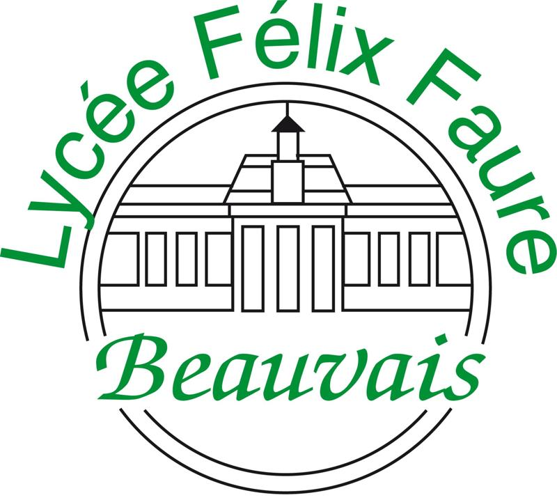

Parcours & Expérience.
Mon stage, ma formation, et tout ce qui m'a amené là où j'en suis.
02
Formation
- Développement — Java, C, PHP, HTML/CSS, algorithmique
- Bases de données — SQL, modélisation, MySQL
- SAE — Covo'IUT, Boutique de Cookies (MVC PHP)
- Réseaux & gestion de projet — Agile, Linux

Spécialité NSI + Mathématiques Expertes.
03